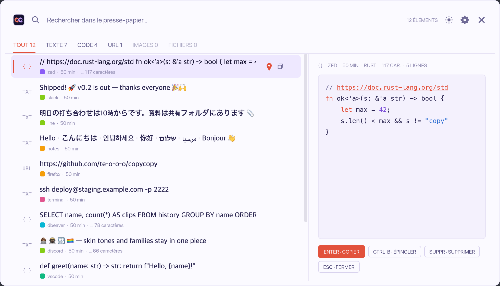
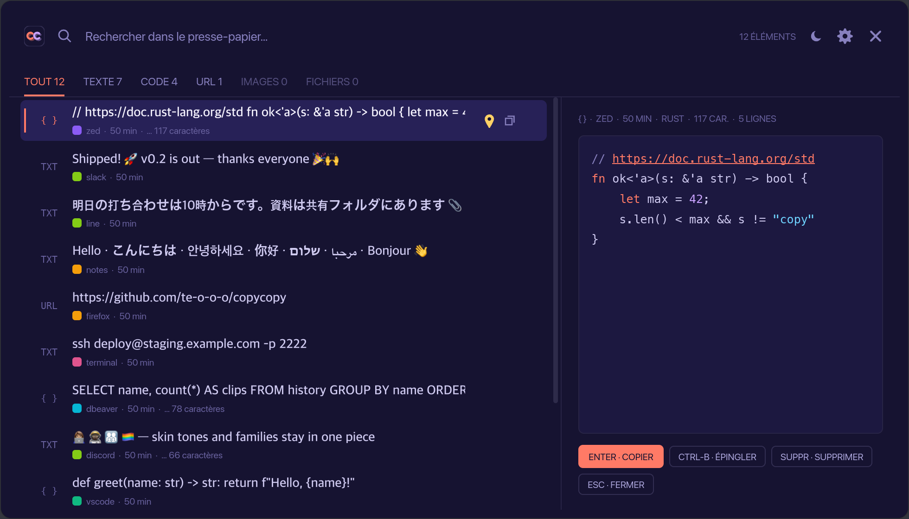

A clipboard manager that remembers everything you copy, except your passwords.
Version 0.6.0, free and open source. The builds are not signed yet. On Windows, choose More info, then Run anyway. On macOS and Linux, run this once:
# macOS xattr -dr com.apple.quarantine /Applications/copycopy.app # Linux chmod +x copycopy-linux-x86_64.AppImage
Other formats, such as the portable zip and the .deb, are on the releases page.

